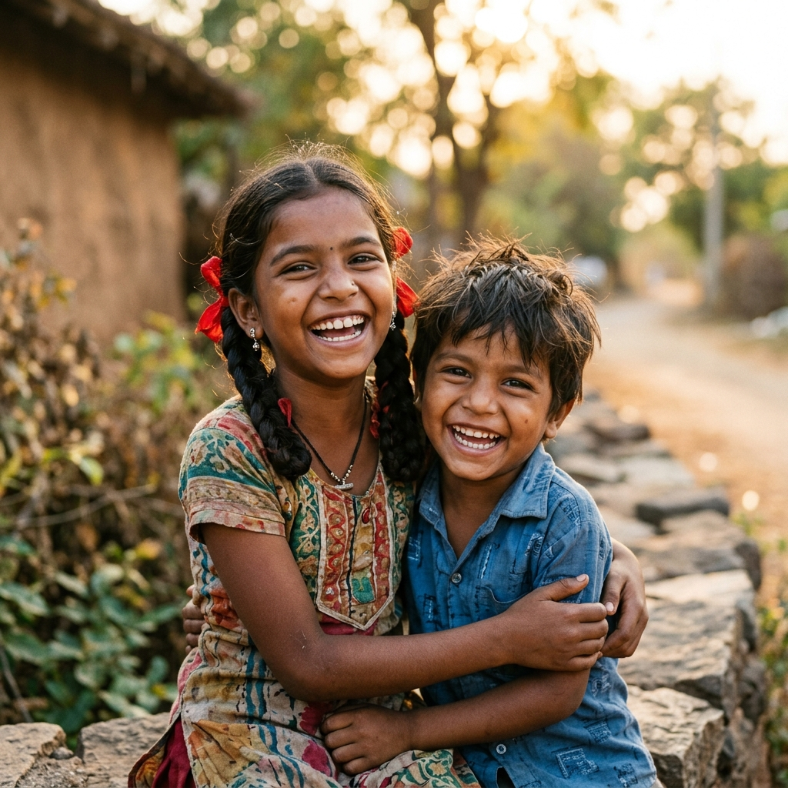
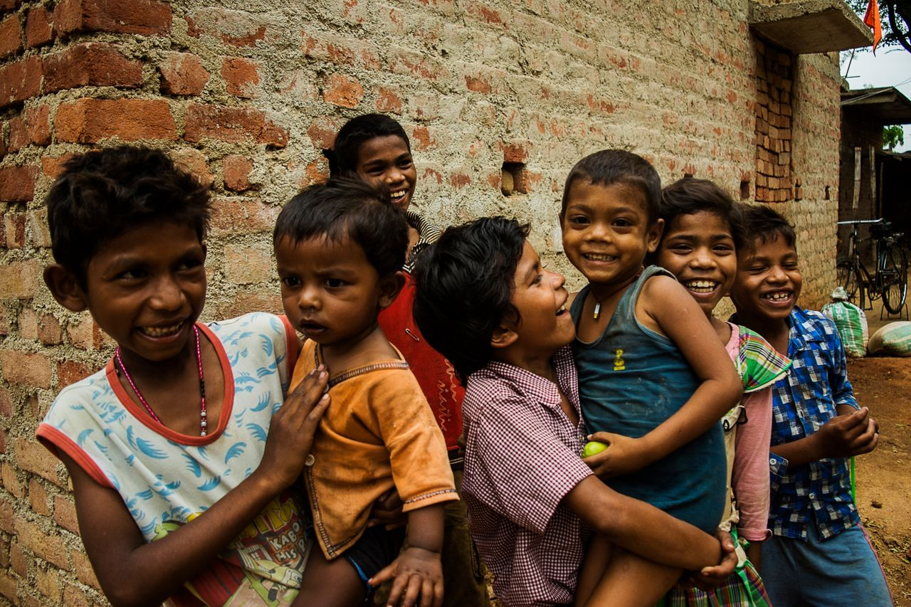

Physiotherapy support
Helping children improve mobility, posture, strength and balance.
Jwalin Charitable Trust supports children with Cerebral Palsy, developmental disabilities and mental disorders across India — through awareness, therapy support, education and compassionate care for the whole family.

Programs shaped around each child's pace, needs and milestones.
Clear, practical education so you never feel alone on this journey.
Awareness and screening help families act when it matters most.
Care rooted in the community, close to the families who need it.
We walk with families for the long haul, not just a single visit.
A supportive, judgement-free space for children and caregivers alike.

Jwalin Charitable Trust was founded with a mission to create a more inclusive and supportive world for children with Cerebral Palsy and developmental disorders. We believe every child deserves love, dignity, education, healthcare, and the opportunity to reach their fullest potential.
Through awareness initiatives, therapy support, educational assistance and parent-empowerment programs, we strive to bring meaningful change to families facing physical, neurological and developmental challenges.
Read more about usCerebral Palsy (CP) is a neurological condition that affects movement, muscle coordination, posture and balance. It occurs due to damage to the developing brain — before, during or shortly after birth.
CP affects every child differently. Some children have mild movement difficulties, while others may need lifelong support. With early intervention and the right care, many children make remarkable progress.
Learn more about CPA connected journey of care — from first awareness to lifelong support.
Helping children improve mobility, posture, strength and balance.
Supporting communication, language development and social interaction.
Helping children perform everyday activities more independently.
Guiding parents emotionally and practically throughout their journey.
Opening learning opportunities and special education resources.
Spreading awareness about early diagnosis and timely intervention.
Figures shown are placeholders — replace with your trust's verified numbers.
Through care, therapy, patience and family support, many children show remarkable progress and growing confidence. Their stories remind us why early intervention and steady support matter so deeply.
Share authentic transformation stories here, with photos and parent testimonials (with consent).
Read success stories“The therapy support and guidance gave our family hope. Watching our daughter take her first independent steps was a moment we will never forget.”
— Parent of a child supported by Jwalin
Sample testimonial — replace with a real one.
Your contribution helps provide therapy support, education assistance, awareness programs and hope to families facing developmental challenges.